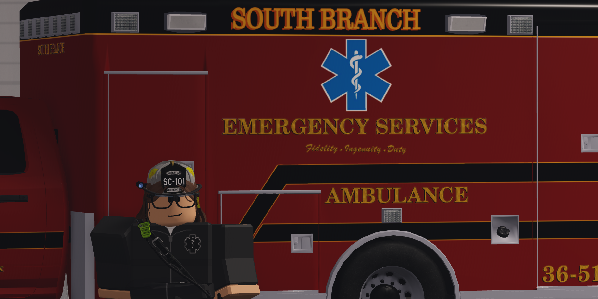

Hello! I'm Saturn, a graphic designer, programmer, and roleplayer. My journey into livery design began with some very simple, low-level creations in ER:LC. Through a lot of trial and error, I learned what to do and what not to do. I started small, but slowly, I began recreating liveries for local law enforcement and rescue teams, which gained me some experience and success. As I worked on my skills, I got more serious about it. I started using Photoshop, learned how to make LSPDFR cars, and really put a lot of work into each design. Now, I'm dedicated to creating high-quality liveries that bring a touch of realism and excitement to a server.